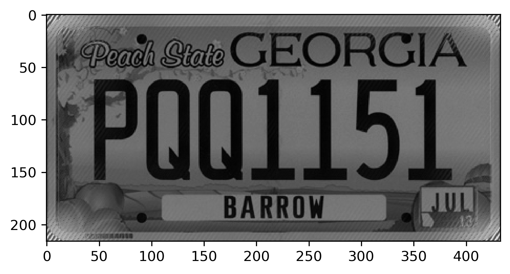

The Power of the Fast Fourier Transform for Data Quality
A variety of signal processing techniques to augment noisy audio files and images | View Code
"Anytime a signal is processed, there's a good chance that a Fast Fourier Transform is involved… And if [scientists] had discovered it sooner, it may have put a stop to the nuclear arms race."
- Derek Muller (Veritasium)
The Fast Fourier Transform
The Discrete Fourier Transform (DFT) is a fascinating mathematical tool that breaks down complex signals, like audio data, into their fundamental frequency components. It's like discovering the hidden musical notes within a seemingly chaotic symphony. By representing a signal in terms of its constituent frequencies, the Fourier transform enables us to analyze, modify, and process the data with great precision.
One of its crucial applications lies in audio denoising, where unwanted noise can be isolated and removed by filtering out specific frequency components, leaving behind the clearer, more intelligible sound. Thanks to the Fourier transform's ability to unveil the underlying structure of signals, it has become an indispensable tool in modern audio processing, enhancing the quality of our listening experiences by eliminating distractions and revealing the true essence of human speech and music.
The Fast Fourier Transform (FFT) is like a turbocharged version of the regular Fourier Transform. While both reveal frequency components in a signal, the FFT is faster because it cleverly reduces redundant calculations and takes advantage of patterns in the data. It's like finding a shortcut through a maze instead of wandering around aimlessly. By being more efficient, the FFT can process large amounts of data much quicker, making it the foundational technique in various fields like audio processing. It can swiftly identify and remove unwanted noise from audio, providing us with clearer, more enjoyable sound experiences quickly.
Convolution

Convolution is another mathematical operation used in signal processing to mix two audio signals together. It combines the elements of two periodic sound samples to create a new sound vector. The process involves multiplying corresponding elements of the two samples and then summing them up to produce the resulting vector. However, when dealing with large audio files, this calculation can be computationally expensive. Thankfully, the DFT allows us to efficiently compute convolutions by using component-wise multiplication in the frequency domain, which significantly speeds up the process. This FFT approach reduces the computation time from O(n^2) to O(n log n), making smooth audio processing a possibility today.
Filtering
Imagine you have an audio file with some annoying background or white noise that's distracting you from the music you love or a video with a treasured memory. By taking advantage of the processing power of the FFT, we can identify, isolate, and remove unwanted noise from any audio.
First, we identify the frequencies we want to get rid of in the audio signal by applying the FFT to the original audio file. This operation returns a list of frequencies and the strength of their contribution to the audio. Second, we can then choose any range of frequencies to reduce or remove completely by setting them to zero. Finally, we take the inverse FFT (IFFT) of the resulting array to obtain a cleaned audio file without the unwanted noise.
This technique, known as spectral gating, is a common approach for cleaning audio files. By selectively removing specific frequency components corresponding to unwanted noise, spectral gating acts as a virtual "noise gate" for audio signals. It's like having a smart bouncer at a club who lets in only the good vibes and keeps the unwanted trouble out. Whether it's eliminating background hum, static, or any other annoying interference, spectral gating allows us to isolate and suppress those unwanted frequencies, leaving behind a pristine and enjoyable audio experience. Interestingly enough, the 2-dimensional version works for images as well.
Cleaning Images
To clean images using the FFT, we can follow a similarly powerful process. First, we take the two-dimensional DFT of the image matrix, which transforms the image from the spatial domain to the frequency domain. This allows us to analyze the frequency components present in the image. Next, we identify spikes in the DFT, which are abnormally high frequency values. These spikes could be caused by noise or unwanted artifacts in the image. To do this, we plot the log of the magnitudes of the Fourier coefficients, making it easier to spot significant frequency spikes.
Once we've pinpointed these unwanted frequencies, we modify the corresponding entries in the DFT matrix to reduce or remove their influence. This is like selectively muting specific noise frequencies while keeping the essential image details intact. Finally, we perform the Inverse DFT (IDFT) on the modified DFT matrix, which brings the cleaned image back to the spatial domain. The result is a cleaner version of the original image, with the periodic noise and unwanted frequencies effectively reduced or eliminated.
def clean(self, low_freq, high_freq):
"""Remove a range of frequencies from the samples using the DFT.
Parameters:
low_freq (float): Lower bound of the frequency range to zero out.
high_freq (float): Higher boound of the frequency range to zero out.
"""
# set local variables
f = self.samples
n = len(self.samples)
r = self.rate
c = fftpack.fft(f)
# find klow and khigh
klow = int(low_freq * n / r)
khigh = int(high_freq * n / r)
# set the given ranges to zero
c[klow:khigh+1] = np.zeros(khigh-klow+1)
c[n-khigh:n-klow+1] = np.zeros(khigh-klow+1)
# update self.samples
self.samples = fftpack.ifft(c)

This technique can be particularly useful for images that contain periodic noise or are captured from screens or digital displays. By leveraging the DFT's ability to analyze and manipulate frequency components, we can enhance the quality and visual clarity of digital images, improving the overall viewing experience.
Source Code
While there is a lot of research on alternate techniques for signal processing and cleaning, the Fourier Transform is one of the most important and fundamental. The modern age of technology would not be the same without it. In the wake of the Oppenheimer movie release, world politics might look very different if it had been published sooner. If you would like to review my code for this project, it is available on my Github.